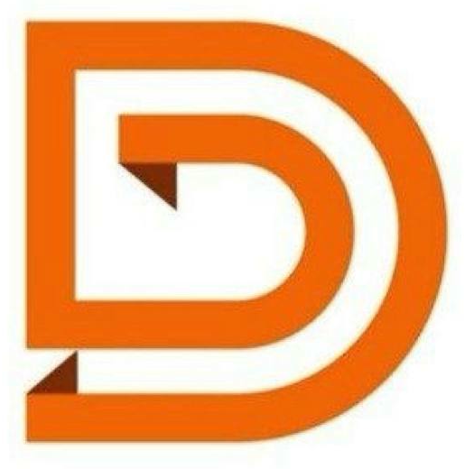
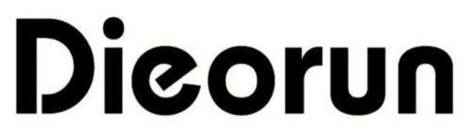

رفتن به محتوا


MOVE. MEET. REPEAT.
کشف برنامهها
تقویم
مربیان
دربارهٔ ما
پشتیبانی
ورود / عضویت
نسخهٔ نمایشی · همهٔ برنامهها، قیمتها و مکانها ساختگیاند؛ ثبتنام و پرداخت واقعی انجام نمیشود.
×
برای دیدن نقشه و برنامهها، جاوااسکریپت مرورگر را فعال کنید.